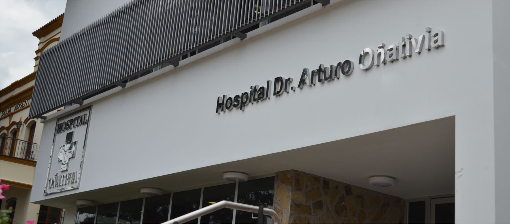

17puestos
El único centro de hemodiálisis en un hospital público de Salta
Funciona en tres turnos y atiende a unas 100 personas, especialmente pacientes sin obra social.
Somos un hospital público de alta complejidad de Salta. Atendemos a pacientes de la capital, del interior de la provincia, de otras provincias y de países vecinos, con o sin obra social.

Los trámites más buscados, resueltos en un toque. Cada uno lleva a una página con pasos, horarios y requisitos.
Buscá por especialidad, estudio o síntoma. Hoy estos servicios figuran en el sitio como botones rotos; acá cada uno tiene su lugar.
Servicios de referencia para toda la provincia y el Noroeste argentino, dentro de la salud pública.
Funciona en tres turnos y atiende a unas 100 personas, especialmente pacientes sin obra social.
El único servicio del NOA dentro de un hospital público. Diagnóstico y tratamiento de patologías tiroideas, cardíacas, óseas y renales.
Desde 2010, para pacientes con o sin obra social, sin tener que viajar fuera de la provincia.
Centro de referencia para adultos en Endocrinología, Diabetes y Cirugía Tiroidea.
Unidad de Conocimiento Traslacional Hospitalaria acreditada por el Ministerio de Salud de la Nación en 2022, junto al CONICET.
Nació para combatir el bocio endémico en el NOA. Hoy es un hospital de alta complejidad que investiga, enseña y atiende.

Un salteño que honró a su provincia como médico, docente, investigador y político.Dr. Arturo Oñativia (1914 – 1985), primer director del Instituto del Bocio
Médico endocrinólogo egresado de la UBA con calificación sobresaliente. Ganó por concurso la dirección del Instituto en 1958. El hospital lleva su nombre desde 1985.
Formación de posgrado para profesionales de la salud. Las residencias son rentadas y se acceden por concurso público.
Inscripción en febrero por el sistema SISA del Ministerio de Salud. Inicio en junio. Ir a SISA
No rentadas. Inscripción en febrero, examen en marzo. Programa de Recursos Humanos, lunes a viernes de 7 a 16 h.
El sitio actual no publica desde mayo de 2020. Esta sección muestra cómo se vería con publicaciones regulares.
El déficit de yodo es la principal causa de discapacidad prevenible. Qué alimentos lo aportan y quiénes necesitan controlarse.
Institucional EjemploFechas, requisitos y cómo inscribirse por SISA.
Investigación EjemploQué estudia hoy la unidad de investigación traslacional.
Todos los canales en un solo lugar, con datos que se pueden copiar.
Ingreso principal y Centro Ambulatorio: consultorios externos, extracciones, vacunatorio y admisión.
Reclamos, sugerencias y felicitaciones. Dejalos en el buzón del Hall Central o en el libro de Gerencia. Propuesta: sumar un formulario en línea con número de seguimiento.
Escribir un reclamo